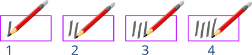
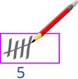
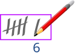
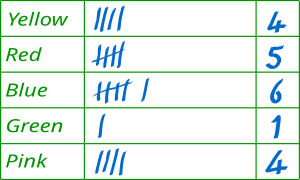

Tally Marks
It is easy to do a tally, just put marks on a piece of paper!
Here are the tally marks for 1 to 4:

| BUT the 5th mark is drawn ACROSS the previous 4 marks: |
 |
Then continue making single marks again:

Remember: every fifth mark is drawn across the previous 4 marks
It makes it easy to see the total later on!
Example: A tally of 12
We can see there are two 5s (making 10) plus another 2 singles, making 12
Tallying in Surveys
We can use tally marks when doing a Survey.
Example: "What is your favorite color?"
Ask some people what their favorite color is.
Put a mark next to the color they like

When done, write in the totals.
Result: 4 people liked Yellow, 5 liked Red, 6 liked Blue, only 1 liked Green and 4 people liked Pink.
The most popular color was Blue.
What results would you get? Try this survey!
Tally Using Dots and Lines
There is another cool way to tally: Tukey Tallying.
But it can be a little slower, as drawing dots takes longer.